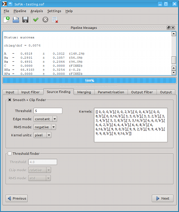

SoFiA provides a comprehensive and modern graphical user interface based on the Qt framework. It has been designed to run on different operating systems and provide the native look & feel on each system. Hence, a SoFiA window in Mac OS X will look slightly different from a SoFiA window on a Linux machine, but the functionality will be the same on both systems. The screenshots shown on this page were obtained on a Linux/KDE system in “Plastik” style.

The user interface of SoFiA can be subdivided into the following areas: